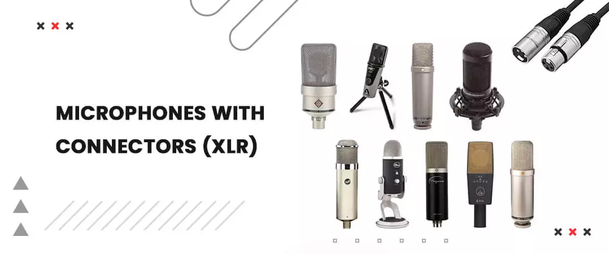
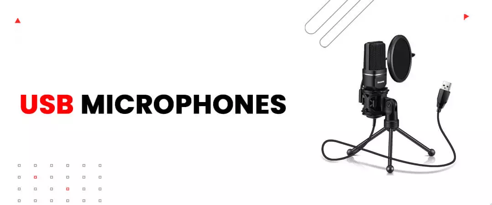
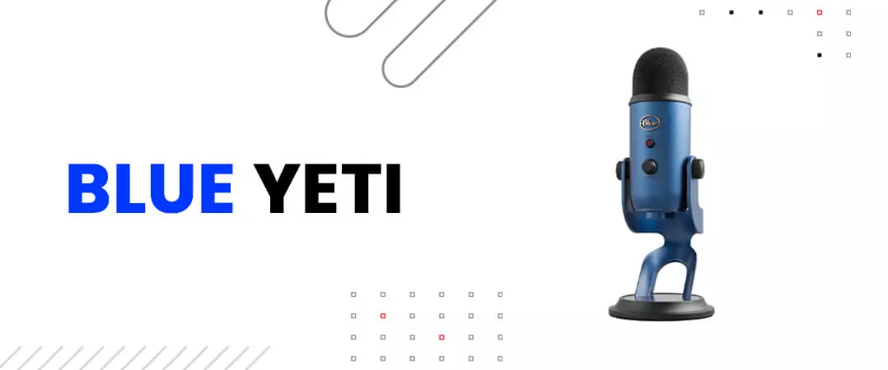
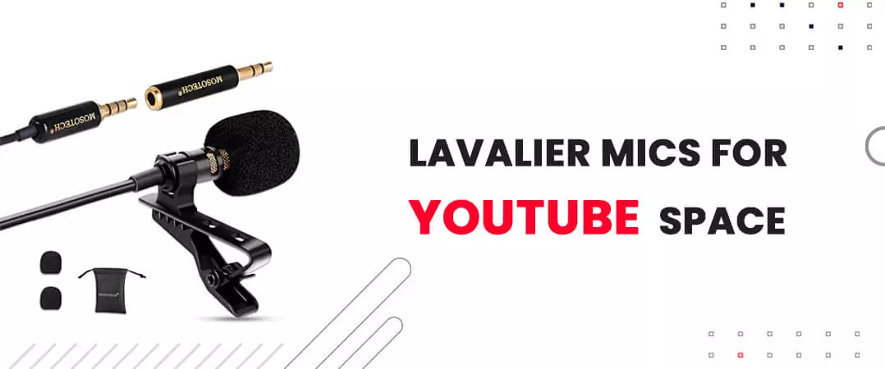
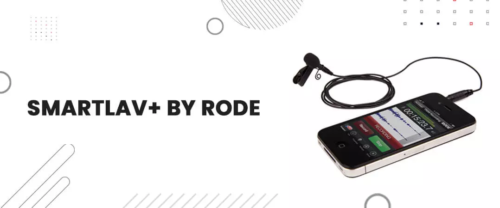
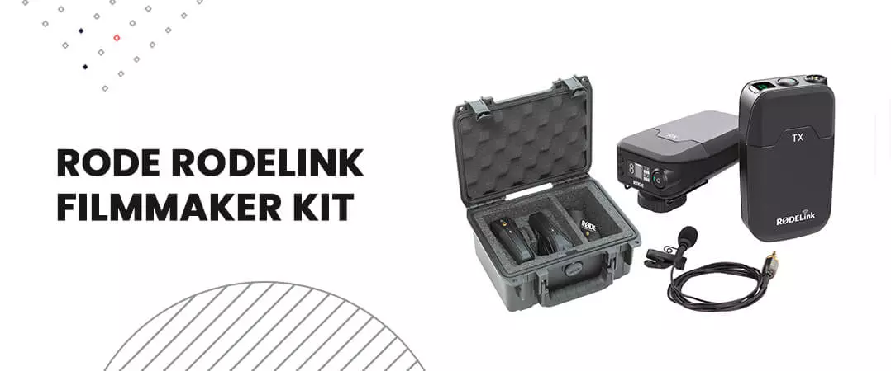
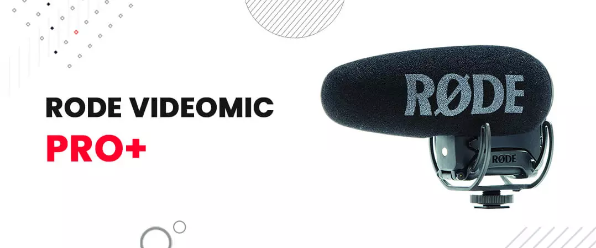
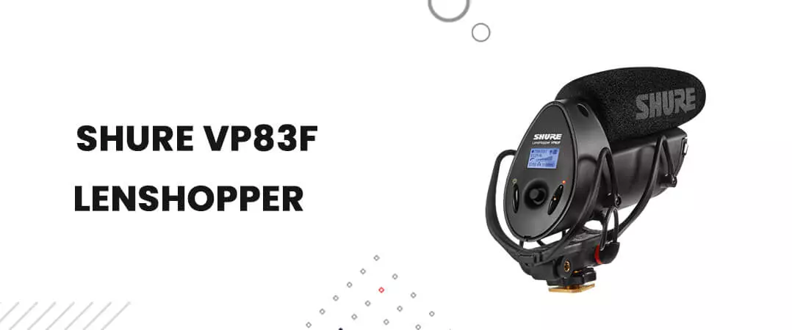
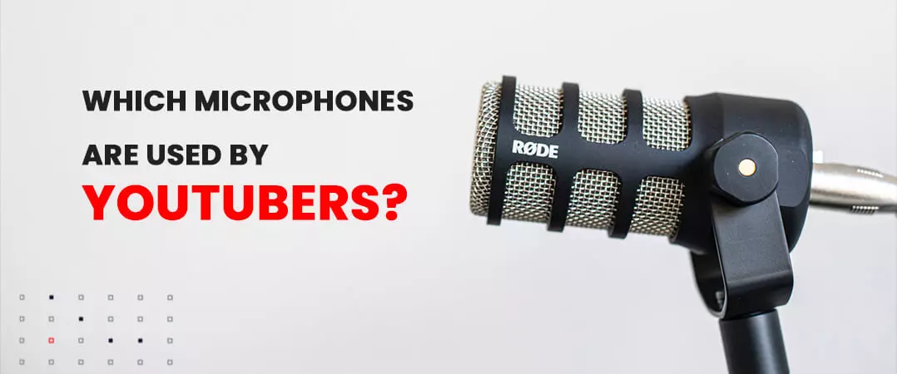

The ideal microphone for YouTube will primarily be determined by the sort or style of videos you produce. In many situations, you'll need more than one microphone so you may utilize the one that best suits your needs.
An XLR or USB studio mic will prove to be perfect for screen recordings or voiceovers after you have completed recording the same. In many circumstances, lavalier mics are ideal since you don't have to fret about being too near to the mic — simply clip them on and start video filming. Shotgun microphones are ideal for fast-paced videos, sit-down interviews, and vlogging.
Though the quality of the mic plays a significant role in the quality of your videos, however, all of these efforts prove to be ineffective if you don’t have enough subscribers or engagement on the platform, with over 2 billion monthly users and 38 million accounts this can prove to a challenge in itself as balancing quality and engagement is a hectic task, so what can we do? Luckily today there are several sites where you can buy YouTube subscribers, likes or comments, etc.
Because there are so many different sorts of videos and so many different microphones that work well for recording them, we've broken down our top YouTube microphones into categories so you can quickly discover what you need.
Best Microphone for Recording YouTube Videos
Microphones with Connectors (XLR)

When you're willing to take your YT audio to the next level, invest in an XLR microphone. To link it to your computer, you'll also require a USB audio interface You may always install microphone preamps and other gear later if necessary. It can prove to be extremely successful when used for a podcast, etc.
AT2035 Audio-Technica
The fact that the Audio-Technica AT2035 includes a shock mount is fantastic. Although a boom arm is required for installation, the quality of the audio will be greatly improved, and you won't have to purchase the mount individually. Low-frequency noises like PC fans, warmers, and other background noise are reduced by the mic's 80Hz high-pass filtration. You'll need to provide phantom power because this is a condenser microphone, but you shouldn't need much amplifying.
Rode: Procaster
For the price asked for the Rode Procaster, it works like magic. To reduce vibrations and sound of handling, it has an inner pop filter and an inbuilt shock mount. To better isolate the mic, you can purchase the Rode PSM1 shock mount. The shock mount is highly recommended because the supplied mount is flimsy and made of plastic, and it will be much simpler to get the Procaster into the proper position.
It's a flexible cardioid end-address mic that has to be amplified quite a bit. The Cloudlifter CL-1 or an individual pre-amp like the DBX286s are the simplest methods to enhance it, but I simply connect it into a Zoom H5 with the gain set to approximately 6 and it works fine.
Also Read: How to create faceless YouTube channels
USB Microphones

Although USB microphones are the simplest to set up and operate, they limit your ability to update and enhance your audio quality over time. however, they can be used for podcasts, gaming, interviews, etc. Many creators make this a part of their equipment to start a YouTube channel .
NT-USB by Rode
The Rode NT-USB is a professional cardioid condenser microphone with a USB connector for easy plug-and-play functionality. The included tripod performs a decent job of minimizing noise, however, an extra shock mount would be ideal.
The sound quality is amazing, and this is without a doubt one of the finest YouTube microphones under $200. There's a headphone jack with volume control and a mix control slider for blending computer sounds and your speech. You must modify the input volume on your computer since this lacks inbuilt gain control.
Blue Yeti

It's no wonder that the Blue Yeti is a favorite amongst all YouTubers. For the price, it provides excellent sound quality and a plethora of functions making it a good microphone for YouTube. There are three condenser mic capsules in total, with four distinct pickup patterns to select from. The cardioid pattern is most commonly utilized for voiceovers, but the reality is that it can also be used as a conferencing or interviewing mic makes it well worth the investment (the Yeti is generally discounted about $100 during Christmas sales).
There's a mute button (which is really useful!), take ownership, a headphone jack (with volume slider), and a solid stand. The Yeti is also present in a range of colors.
Lavalier Mics for YouTube Space

Lavalier microphones are convenient since they are compact and portable. They'll clip or stick to your shirt and won't get in the way of your footage. These mics can be used for any kind of vlogs, street interviews, knowledge imparting videos, etc.
You should be mindful of the connector type they use since a few are designed for smartphones (TRRS jack) while others are designed for DSLRs and pocket recorders (using either TRS or XLR connections). Adapters are always obtainable, but I decided to make you aware of the differences in connections.
SmartLav+ by Rode

The Rode SmartLav+ is a popular choice if you want something that you can just connect into your phone to receive great sound.
It uses a TRRS connection (just like your smartphone), but you can get the Rode SC3 converter if you want to use it with a recording device or camera. This is a great choice if you don't want to pay a high value on a professional-level lavalier mic.
Rode RodeLink Filmmaker Kit

The RodeLink Filmmaker Kit is a portable lavalier system that works with DSLR cameras and recorders which are digital. A high-quality lav mic is included, as well as a digital transmitter and receiver. Until you're at a crowded event like a trade fair with a lot of other wireless devices around, the wireless connection works from a long distance making it one of the best choices in wireless mic for YouTube.
Also Read: Best YouTube Video Editing Services
Mics With Shotguns for YouTube
A shotgun mic for YT should be attached to your camera's shoe and allow you to utilize it off-camera for interviews or other similar duties. these mics are great if you want to make a professional video like movies, news reports, etc.
Rode VideoMic Pro+

Rode released the VideoMic Pro+ in August of 2017. It added a slew of new and helpful capabilities to the VideoMic Pro (no plus). Auto power on/off, detachable cable, safety channel, and rechargeable lithium battery are among my favorites.
This is a great tiny shotgun mic that isn't inexpensive. If this one is out of your price range, Rode offers a complete series of VideoMics.
Shure VP83F LensHopper

The Shure VP83F is unique in that it has a MicroSD card port, allowing you to utilize the mic without a camera, if necessary, which can be of great help if you are creating podcasts on your channel. It also features a very precise gain control, allowing you to easily change the pickup loudness based on the scenario.
Here are some of the microphones used by your favorite YouTubers…
Which Microphones Are Used by YouTubers?

Casey Neistat (@CaseyNeistat)
- VideoMic Pro by Rode (on-camera shotgun)
- VP83 Shure (backup to the above mic)
Marques Brownlee (@MKBHD)
- Yeti in blue
- MKH416 Sennheiser (shotgun)
- MK41 Schoeps (supercardioid set)
Kraig Adams (@Kaaadams)
- Rode VideoMic Pro+ (Rode VideoMic Pro+) (shotgun on camera)
- NT-USB by Rode
- AVX ME2 Lavalier Kit by Sennheiser (pro-level wireless lavalier for DSLR)
@davidrocknyc (@davidrocknyc)
- VideoMic GO by Rode (on-camera shotgun)
- AVX ME2 Lavalier Kit by Sennheiser (pro-level wireless lavalier for DSLR)
- EW 112P G3-A Sennheiser (wireless lavalier kit)
Do try it out and share your experience!